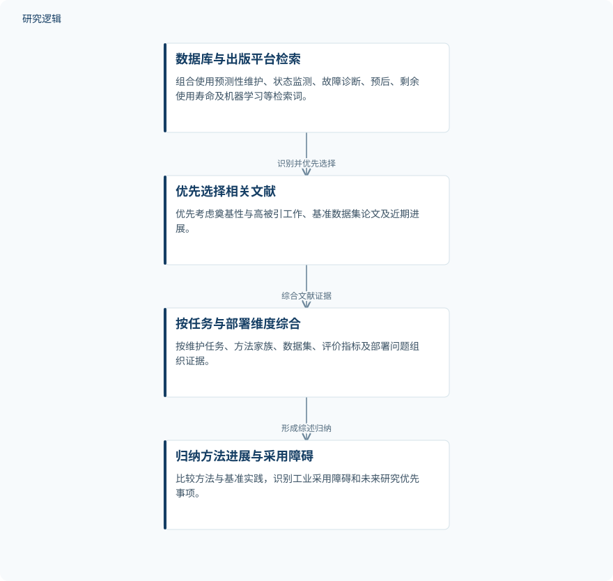

摘要解读
工业系统预测性维护中的机器学习：方法、基准、挑战与未来方向综述
Machine Learning for Predictive Maintenance of Industrial Systems: A Review of Methods, Benchmarks, Challenges and Future Directions
解读更新 2026-11-10 10:13 · 依据公开摘要整理，未核验全文细节
预测性维护中的机器学习，如何从基准上的准确预测走向可靠的工业决策？这篇叙述性综述梳理方法演进与落地障碍，提醒读者：阅读模型成绩时，还要追问现场验证、不确定性与维护收益。
文章目录
预测得准，距离维护有效还有多远
工业资产预测性维护不仅涉及故障诊断，也涉及剩余使用寿命预测。这篇综述关注机器学习如何服务这些任务，并比较主要方法家族与基准评价实践，讨论限制工业采用的障碍。其核心问题不是寻找单一最优算法，而是辨别已有预测能力与实际维护价值之间的距离。
按任务、方法与部署问题整理文献
研究采用叙述性、非系统性综述设计。作者从主要科学数据库和出版平台识别2006至2026年的同行评审期刊论文、会议论文及已有综述，组合使用预测性维护、状态监测、故障诊断、预后、剩余使用寿命与机器学习等检索词。
文献选择优先考虑奠基性与高被引工作、基准数据集论文和近期进展，再按维护任务、方法家族、数据集、评价指标及部署问题综合证据。因此，摘要呈现的是领域脉络与问题归纳，而非作者开展的一组模型对照实验。
依据摘要整理的综述证据组织过程


仅概括摘要明确说明的文献识别、优先选择与证据综合关系，不代表论文原图或系统性综述流程。
下载 SVG图示关系说明
实线表示相邻阶段的信息流，虚线表示跨阶段联系或反馈。
数据库与出版平台检索 → 优先选择相关文献：识别并优先选择；优先选择相关文献 → 按任务与部署维度综合：综合文献证据；按任务与部署维度综合 → 归纳方法进展与采用障碍：形成综述归纳
深度模型成绩突出，现场证据仍是瓶颈
综述归纳的方法演进，是从依赖人工特征的浅层分类器，转向直接学习原始传感器信号的卷积、循环及注意力网络，并进一步发展到迁移学习、联邦学习、物理信息混合模型和大型基础模型。这里列举的是技术发展方向，不代表各类方法已获得同等程度的工业验证。
摘要报告，深度模型在轴承故障诊断和涡扇发动机剩余使用寿命估计的公共基准上表现出较高准确性；物理与深度学习混合模型则在减少训练数据需求的同时延长了预测时间跨度。但多数证据仍来自少量实验室或仿真数据集，域偏移、故障数据稀缺、不确定性量化、可解释性及预测与维护决策的衔接仍未得到充分解决。
作者据此强调，工业价值不主要取决于基准成绩的边际提升，而取决于经过现场数据验证、稳健、可解释、能够表达不确定性并面向决策的模型。这是综述提出的判断，不能理解为所有相关方法已达到这些要求。
摘要不足以判断收益大小与适用范围
本解读仅依据完整摘要。摘要未报告纳入文献数量、各数据集样本规模、具体比较模型、性能数值及现场验证范围，也未说明混合模型减少数据需求和延长预测时间跨度的幅度。因此，无法据此判断结论在不同设备、工况和评价设置下的一致性；这些信息未在摘要中出现，不等于论文没有讨论。
阅读启发：把评价终点放回维护决策
阅读启发：进一步阅读时，可重点追问基准结果是否经现场数据检验、跨工况表现如何，以及预测不确定性如何进入维护决策。作者提出的标准化评价协议、开放工业数据集、知识与数据混合模型及成本收益证据，值得作为阅读线索，而不是已经实现的改进效果。
以上为本站阅读启发与建议，不是论文已验证的结论。